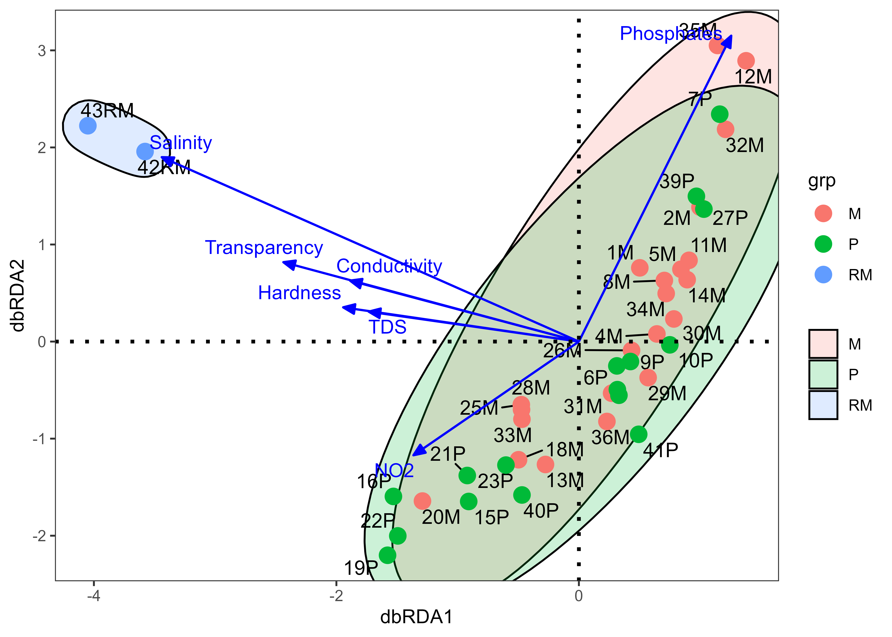
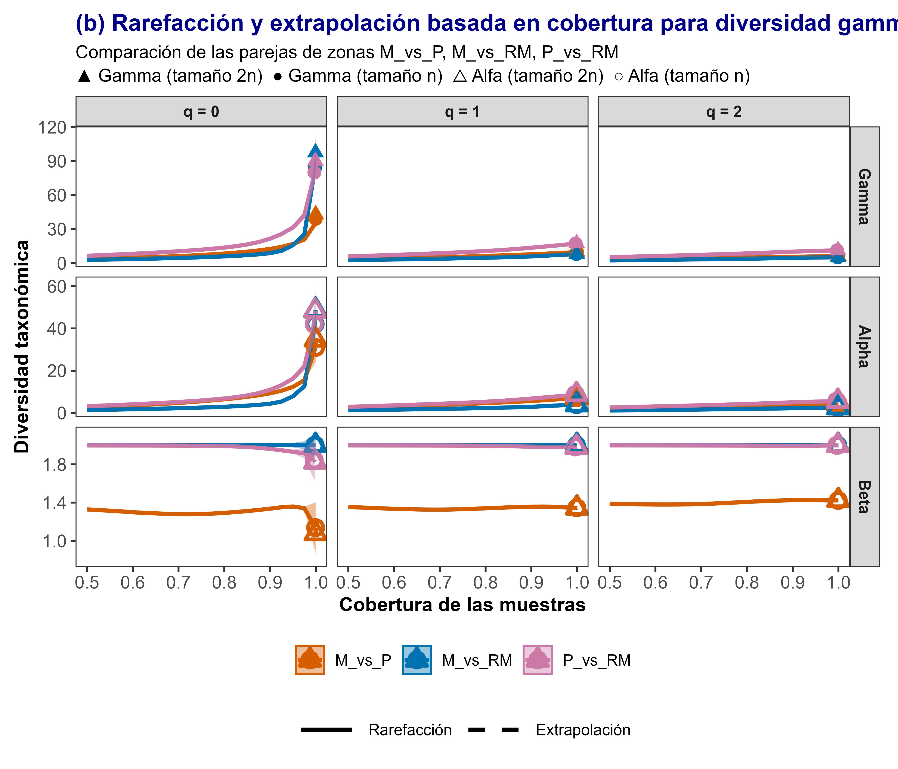

Ejercicios de entrenamiento para la el análisis de diversidad beta en muestras de peces en ríos en Mexico.
Autor/a
Javier Rodríguez-Barrios, Kenedith Méndez y Javier de la Hoz
Fecha de publicación
October 30, 2025
Introducción
1. Propuesta de Whittaker de diversidad beta en relación a gamma y alfa.
El concepto de diversidad beta fue introducido por Whittaker (1960), quien distinguió tres niveles de diversidad:
La diversidad alfa, entendida como la diversidad local o dentro de un sitio (o el alfa promedio de varios sitios).
La diversidad gamma, correspondiente a la diversidad regional o total (suma de las especies de todos los siots).
La diversidad beta, representa la variación en la composición de especies entre sitios y describe cómo cambia la biota a lo largo del espacio o del tiempo.
Según Whittaker (1960), la diversidad beta se refiere al cambio en la composición de especies entre distintos sitios o zonas. En otras palabras, mide cuánto difieren las comunidades cuando se comparan entre sí. Para cuantificarla, se utilizan índices de disimilitud, los cuales tienen en cuenta cuántas especies son compartidas entre los sitios y cuántas son exclusivas de cada uno. Este autor plantea que para calcular la diversidad beta, se fundamente en la siguiente formula:
\(β = S/α\)
donde, S es el número de especies en el vector de composición del ensamblaje total (S:diversidadgamma-\(\gamma\)), α es el número promedio de especies en los n sitios de muestreo. β indica cuántas especies adicionales hay presentes en toda el área evaluada (\(\gamma\)), comparado a un sitio individual promedio (α).
Whittaker asume que el índice β es multiplicativo, por ser una razón. En este sentido, para calcular β con esta propuesta, es necesario calcular \(\gamma\) y α promedio. A continuación se muestra la forma de organizar los datos para el cálculo de este índice beta.
En términos simples, la diversidad beta conecta a la diversidad local con la regional, reflejando qué tanto difieren los ensamblajes o comunidades entre localidades. Además, puede ofrecer información sobre la variedad de ambientes o nichos ecológicos disponibles, especialmente cuando existen diferencias marcadas en la diversidad alfa entre sitios. Cabe resaltar que los tres tipos de diversidad (alfa, beta y gamma) son relativos a la escala espacial o temporal de análisis; por ejemplo, “alfa” puede referirse a un parche de bosque o a un sitio de muestreo, mientras que “gamma” puede aplicarse a todo un ecosistema o incluso a una región geográfica más amplia.
Whittaker además propuso que la diversidad beta puede abordarse desde dos perspectivas complementarias:
El recambio de especies (Recambio): representa el cambio direccional en la composición de especies a lo largo de un gradiente espacial, temporal o ambiental definido.
La variación entre comunidades sin gradiente explícito, que refleja diferencias en la composición debidas al anidamiento o pérdida de especies, sin que necesariamente exista un gradiente ambiental detrás.
En esta sección se analiza cómo surgió esta forma de particionar la diversidad beta, mostrando algunos ejemplos y aplicaciones que ayudan a comprender su utilidad. También exploraremos cómo esta aproximación se ha extendido para incluir índices que consideran la abundancia de las especies, así como otras dimensiones de la diversidad, como la filogenética y la funcional. De esta manera, podremos entender cómo y por qué cambia la diversidad entre comunidades, y qué factores ecológicos influyen en esos patrones espaciales y temporales.
2. Propuesta de Legendre de diversidad beta por variaciones en especies y sitios
A partir de las consideraciones de Whittaker (1960) en cuanto a la variación en la composición de especies entre sitios, Legendre y De Cáceres (2013), desarrollan ecuaciones para calcular la diversidad beta (beta total) a partir de la varianza de las abudancias de especies (SCBD) y entre sitios (LCBD). Lo novedoso de este enfoque es que permite identificar las especies que más aportan a ese nivel de diversidad y que por ende, revisten importancia ecológica, así como los sitios con mayor diversidad de hábitats que aportan a la variabilidad espacial o temporal de las muestras en estudio.
3. Propuesta de componentes de la diversidad beta
Autores como Harrison et al. (1992), Williams (1996), Lennon et al. (2001), Podani (2011) y Legendre (2014) retomaron la propuesta de Whittaker, coincidiendo en que las diferencias entre comunidades se deben principalmente a dos procesos ecológicos:
Recambio o reemplazo de especies, también conocido como rotación, y
Diferencias en riqueza de especies, que pueden manifestarse como ganancia o pérdida local de especies, o en casos particulares, como el anidamiento (cuando una comunidad menos diversa es un subconjunto de otra más rica).
De forma similar, Baselga (2010) y Baselga y Gómez-Rodríguez (2019) enfatizaron que la diversidad beta se origina por dos componentes:
el recambio (replacement o Recambio), que describe la sustitución de unas especies por otras; y
el anidamiento (nestedness), que refleja la pérdida de especies de una comunidad más diversa hacia una menos diversa.
El reemplazo o recambio de especies suele observarse a lo largo de gradientes ecológicos (por ejemplo, altitudinales, de humedad o de temperatura). En estos casos, algunas especies ocupan solo una parte del gradiente, limitada por sus tolerancias y óptimos ecológicos. Así, unas especies desaparecen y son reemplazadas por otras conforme cambian las condiciones ambientales. Estos patrones pueden originarse por forzamientos ambientales, competencia interespecífica o procesos históricos, como perturbaciones pasadas que dejaron su huella en la composición actual de las comunidades. La configuración del hábitat, la presencia de bordes o ecotonos, y las presiones antrópicas que alteran el paisaje también pueden influir significativamente en estos procesos (Filgeras et al., 2016).
Por su parte, las diferencias de riqueza entre comunidades pueden surgir por extinciones locales, condiciones abióticas contrastantes o por procesos ecológicos que determinan cuántos nichos pueden ser ocupados en cada sitio. Cuando una comunidad contiene menos especies, y estas forman un subconjunto estricto de las especies presentes en otra más rica, se dice que existe anidamiento.
Los índices de reemplazo, diferencia de riqueza y anidamiento no constituyen por sí mismos índices de diversidad beta, sino que descomponen coeficientes de disimilitud (como Sørensen o Jaccard) que se utilizan para estimarla.
Legendre (2014) propuso un marco algebraico unificador para comparar las distintas fórmulas publicadas, agrupándolas en dos familias principales de índices:
La familia de Baselga (BAS).
La familia de Podani (POD).
En la familia Baselga (BAS) (Baselga, 2010) desarrolla una propuesta matemática para dividir a la diversidad β total (β Sørensen: βsor) en dos componentes independientes: el recambio de especies, medido con el índice de Simpson (βsim), y el anidamiento o diferencias en riqueza medido con el índice βnes. Este autor definió el índice de recambio o rotación de especies a partir de la similitud de Sørensen, de modo que al restar el componente de recambio del índice total, se obtiene el componente de anidamiento. En ese sentido la diversidad beta se define como \(β_{sor}= β_{sim} + β_{nes}\).
En la familia de Podani (POD) (Schmera y Podani, 2011), primero se discriminan tres fracciones en las parejas de sitios: (1) número de especies compartidas (superposición), (2) reemplazo de especies (recambio espacial: βsim) y (3) la diferencia de riqueza (βrich). La propuesta matemática para dividir a la diversidad β total (β Jaccard: βjac) solo tiene en cuenta a las fracciones (2) y (3), al no incluir las especies compartidas, el anidamiento será solo una fracción del descrito por Baselga (anidamiento relativizado). Lo anterior promueve a que en esta propuesta se trabaje con la similitud de Jaccard y no la de Sorensen de la familia Baselga.En ese sentido la diversidad beta se define como \(β_{jac}= β_{sim} + β_{nes}\).
Según Legendre (2014), los índices de reemplazo de ambas familias son fáciles de interpretar ecológicamente, mientras que los índices de anidamiento de Baselga son más complejos y han generado cierta controversia en su interpretación. La criticas a la propuesta de Baselga se fundamentan a que el componente de anidamiento (índice βnes) carece de una justificación teórica y matemática consistente (Almeida-Neto, 2011, Carvalho et al. 2012, 2013), siendo poco sensible a fluctuaciones en el tamaño de las muestras, a pesar que el β total pueda cambiar.
Otras criticas a la familia Baselga, coinciden en que el “anidamiento” debe ser reemplazado por “diferencias de riqueza” como lo propone Podani (Carvalho et al. 2012). Esto es confirmado por medio de experimentos en gradientes hipotéticos y con datos reales, registrando una respuesta linear de β total (βjac), diferente al patrón curvilinear de βsor de Baselga, además, cuando parejas de sitios no comparten ninguna especie, el recambio (βsim de Baselga) es 1 (β máxima), pero βsim de Podani solo alcanza 1 cuando el número de especies exclusivas de ambos sitios es igual. βsim de Podani es constante (reemplazo constante) en gradientes de diferencias de riqueza (βrich), mientras que el βsim de Baselga decrece. En Baselga, βsim > βnes cuando se presenta una perdida importante de especies en uno de los sitios comparados, pero en Podani βsim < βrich. Lo anterior demuestra que en Baselga, la partición de βsor en βsim y βnes sobreestima el componente de reemplazo y subestima las diferencias en riqueza, lo cual no ocurre en Podani (Carvalho et al., 2012).
Sin embargo, Baselga (2012) realiza una revisión a la propuesta matemática de Podani, en el componente de reemplazo (βsim), encontrando que el índice de Jaccard puede sesgarse en la valoración de las especies reemplazadas, para casos en los que hay diferencias notables de riqueza en las parejas de sitios comparados. El autor también menciona que βrich puede sobreestimar las diferencias de riqueza. Sin embargo Carvalho et al. (2013), vuelven a demostrar que las propuestas de Baselga (2010, 2012) carecen de consistencia matemática y generan contradicciones, especialmente en escenarios el componente de reemplazo de Baselga es sobreestimado. Según estos autores la diversidad beta se define como \(β_{cc}= β_{-3} + β_{rich}\), donde \(β_{cc}=β_{sor}\) y \(β_{-3} = β_{sin}\) de Podani.
Figura 1. Diagrama de Venn que representa la relación en una pareja de sitios, donde a= especies compartidas en sitios A y B. b= especies exclusivas del sitio A. c= especies exclusivas del sitio B.
Basado en el diagrama anterior, a continuación se muestras tres escenarios, en la comparación de parejas de sitios, para valorar la diversidad beta, de acuerdo a la propuesta de Podani (\(β_{jac}= β_{sim} + β_{nes}\)).
Escenario (1). Especies exclusivas- cinco: tres en el sitio A y dos en el sitio B, permitiendo que dos especies exclusivas de cada sitio se reemplacen o recambien, involucrando de esta forma a cuatro especies exclusivas en total. Diferencia de riqueza- una especie. En este escenario, el recambio > diferencia de riqueza.
Beta total\(β_{jac}=\frac{3+2}{2+3+2}=0.7\)
Recambio\(β_{sim}=2*\frac{(2)}{2+3+2}=0.57\)
Diferencia de riqueza\(β_{rich}=\frac{|3-2|}{2+3+2}=0.14\)
En este caso, la diversidad beta asociada a la disimilitud o diferencia ente sitios es del 70%, debido a la las cinco especies no compartidas (numerador de la ecuación), de las siete especies totales (denominador). El recambio indica que el 57% del 70% total, seasocia a la sustitución de dos especies del sitio A por dos del sitio B, o que cuatro/siete especies son reemplazadas. La diferencia de especies entre los dos sitios (una especie), representa el 14% del total.
Prioridad de conservación. Especies exclusivas del sitio A > sitio B, por lo que se podría pensar en priorizar la conservación del sitio A, por presentar una especie exclusiva más que el sitio B. En este sentido, las parejas de sitios con alta disimilitud relacionada al recambio pueden priorizarse para conservar, debido a que serán aquellas que presentan especies exclusivas o que no se comparten con el resto de lugares.
Escenario (2). Especies exclusivas- dos: una en el sitio A y otra en el sitio B, permitiendo que solo una especie exclusiva de cada sitio se reemplace o recambie, involucrando de esta forma a dos especies exclusivas en total. Diferencia de riqueza- ninguna especie. En este escenario, el recambio > diferencia de riqueza.
Beta total\(β_{jac}=\frac{1+1}{3+1+1}=0.5\)
Recambio\(β_{sim}=2*\frac{(1)}{3+1+1}=0.5\)
Diferencia de riqueza\(β_{rich}=\frac{|1-1|}{3+1+1}=0.0\)
En este caso, la diversidad beta asociada a la disimilitud o diferencia ente sitios es del 50% y está representada en su totalidad por el recambio.
Prioridad de conservación. Especies exclusivas del sitio A = sitio B, por lo que los dos sitios presentan el mismo valor de conservación. Esto corresponde a casos en los que la diversidad beta se debe solo al recambio de las especies exclusivas.
Escenario (3). Especies exclusivas- dos: una en el sitio A y otra en el sitio B, permitiendo que solo una especie exclusiva de cada sitio se reemplace o recambie, involucrando de esta forma a dos especies exclusivas en total. Diferencia de riqueza- ninguna especie. En este escenario, el recambio > diferencia de riqueza.
Beta total\(β_{jac}=\frac{3+0}{3+2+0}=0.6\)
Recambio\(β_{sim}=2*\frac{(0)}{3+2+0}=0.0\)
Diferencia de riqueza\(β_{rich}=\frac{|3-0|}{3+2+0}=0.6\)
En este caso, la diversidad beta asociada a la disimilitud o diferencia ente sitios es del 60% y está representada en su totalidad por la diferencia de riqueza.
Prioridad de conservación. Especies exclusivas del sitio A > sitio B, en este caso el sitio A presenta mayor valor de conservación por presentar mayor riqueza de especies (6) y mayor número de especies exclusivas (3).
4. Diversidad beta con estandarización de muestras y números efectivos q = 0, 1 y 2
Chao et al. (2023) proponen un método de estandarización riguroso para medir y comparar la diversidad beta entre conjuntos de datos. Son varios los aspectos que diferencian a este procedimiento de los anteriores, por ejemplo, se crean listas con parejas de muestras, que pueden ser sitios o gradientes dentro de sitios, de esta forma, los insumos tabulares y gráficos se presentan en parejas de muestras y no de forma individual.
Los autores evalúan a la diversidad beta cuantificando el grado de diferenciación entre muestras o ensamblajes y soportado en la descomposición multiplicativa original de Whittaker, complementado con los números efectivos de Hill para cualquier orden de diversidad, en especial q = 0, 1 y 2. Es así como la diversidad beta basada en la riqueza (q = 0) cuantifica el grado de cambio de identidad de las especies, mientras que la diversidad beta basada en la abundancia (q > 0) también cuantifica el grado de diferencia entre ensamblajes en la abundancia de especies.
Otra novedad del método propuesto, es que la diversidad beta observada (= gamma/alfa) depende no solo de la diferenciación entre muestrass, sino también del esfuerzo/completitud del muestreo, lo que a su vez induce dependencia de beta en la diversidad alfa y gamma. En este sentido se estandariza las diversidades gamma y alfa con base en la misma cobertura de la muestra (una medida objetiva de la completitud de la muestra), para formular la diversidad beta estandarizada basada en la cobertura. Se propone que la diversidad beta estandarizada resultante elimina la dependencia de la diversidad beta con los valores gamma y alfa, reflejando una diferenciación más exacta entre conjuntos o muestras. La estandarización propuesta se ilustra con conjuntos de datos espaciales, temporales y espacio-temporales.
A. Ejercicio de visualización de diversidad alfa de peces en ríos de México
Resumen
En el presente ejercicio, se empleará una base de datos derivada del estudio de Ruiz-Campos et al. (2021) (enlace_artículo), donde se analiza la diversidad y distribución longitudinal de ensamblajes de peces en la cuenca del río Soto La Marina, al noreste de México. A través del análisis de datos ambientales y biológicos recolectados en 42 sitios, los autores identifican tres ensamblajes principales asociados a zonas fisiográficas (montaña, planicie y desembocadura), y exploran cómo variables como salinidad, conductividad, turbidez y estructura del hábitat explican la composición de esta ictiofauna a lo largo del gradiente ambiental.
A continuación se presentan cuatro formas de medir la diversidad beta, partiendo de la propuesta inicial de Whittaker (1960), el análisis de varianzas de especies propuesto por Legendre (2014), la partición de beta en recambio y diferencia de riqueza de la familia Podani (Schmera y Podani, 2011; Legendre 2014 entre otros) y la propuesta con números efectivos de Hill y estandarización de parejas de muestras de Chao et al. (2023).
Procedimiento a realizar
Como ocurre con la diversidad gamma y alfa taxonómica, se han descrito diferentes enfoques para la valoración de la diversidad beta, tanto para datos de presencia-ausencia como datos cuantitativos en: (1) un solo valor (Whittaker 1960; Legendre 2012), (2) como en sus componentes de variación de especies (Legendre 2014) o (3) en sus particiones como el recambio y la diferencia de riqueza o anidamiento (Baselga 2010; Schmera y Podani, 2011). Recientemente se ha descrito la diversidad beta con (4) métodos de estandarización en la comparación de parejas de sitios y números efectivos de Hill: q = 0, q = 1, q = 2 (Chao et al. 2023).
1. Diversidad beta en un solo valor
La propuesta de Whittaker (1960) para calcular la diversidad beta, se fundamente en la siguiente formula: β = S/α
donde, S es el número de especies en el vector de composición del ensamblaje total (S:diversidadgamma-\(\gamma\)), α es el número promedio de especies en los n sitios de muestreo. β indica cuántas especies adicionales hay presentes en toda el área evaluada (\(\gamma\)), comparado a un sitio individual promedio (α). Se dice que este índice β es multiplicativo, por ser una razón. En este sentido, para calcular β con esta propuesta, es necesario calcular \(\gamma\) y α promedio. A continuación se muestra la forma de organizar los datos para el cálculo de este índice beta.
a. Cargar Librerías
Los siguientes procedimientos para el componente tabular son tomados del capítulo de visualización, en el ejercicio de plancton, con algunos ajustes, ya que para este caso solo se seleccionan las abundancias de los taxones, descartando a las variables ambientales.
Se cargan las librerías para el análisis de diversidad beta, especialmente la betapart, para la propuesta de Baselga (2010) con datos binarios y la adespatial, para la diversidad beta con datos de abundancias.
Código
library(knitr) library(purrr)library(tibble)library(tidyverse) # Para diferentes operacioneslibrary(readxl) # Para la lectura de archivos de Excellibrary(corrplot) # Para las figuras de elipseslibrary(vegan) # Estimadores de diversidadlibrary(ggrepel) # Rótulos a los puntos de figuras en ggplot2library(kableExtra) # Edición de las tablas# Diversidad betalibrary(betapart) # Para diversidad beta de Baselgalibrary(adespatial) # Para diversidad beta de Podanilibrary(ggplot2) # Para la edición de figuraslibrary(caret) # Para convertir datos a binarioslibrary(factoextra) # Para los dendogramaslibrary(gridExtra) # Proyecta varias imágenes en un solo panel library(iNEXT.beta3D)library(iNEXT)
b. Organización de los datos
Código
# Cargar datos desde Excelbiol <-read_xlsx("datos.xlsx", sheet ="tax")# Nombres abreviados de los taxonesbiol1 <- biol %>% dplyr::select(-1) %>%# Elimina la primera columna (Sites)rename_with(~abbreviate(.x, minlength =4), -1)# Agrupar por Sitio y sumar la abundancia de cada taxón por sitiobiol2 <- biol1 %>%group_by(Sites1) %>%summarise(across(everything(), sum, na.rm =TRUE)) biol2 %>%kbl(caption ="", booktabs = F,longtable = T) %>%kable_classic(full_width = F, html_font ="Cambria")
Tabla 1: Base de datos con el total de especies por cada zona (montañas- M, laderas- P y desembocadura- RM
Sites1
Hyps
Atrs
Elps
Mgla
Albv
Angr
Myrp
Ancm
Anch
Brvg
Brvp
Drsc
Drsp
Hrnj
Opso
Cmpa
Cypl
Cypc
Dnde
Dsp.
Nagñ
Mxsc
Astm
Arpf
Amrm
Amrn
Ictl
Ictp
Isp.
Pylo
Synf
Prcp
Djsm
Mglc
Mmbm
Mndb
Hmrb
Strt
Fg...41
Lcnp
Fg...43
Gmbsaf
Gmbsar
Gmbr
Gsp.
Pclf
Pcll
Pclm
Psp.
Xphv
Prnr
Cntu
Mycb
Srra
Lpmm
Msp.
Crnc
Crnh
Crnl
Olgs
Trcc
Trcf
Ltjnscm
Ltjnscy
Ltjg
Dpta
Dptr
Ecnm
Grrc
Anss
Arcp
Lgdr
Aplg
Brdc
Brdr
Cyna
Cynn
Lstx
Mcru
Pgnc
Hrcl
Hrcc
Orca
Drmm
Gbmd
Gbno
Scmr
Etrc
Achl
Symc
M
0
0
0
0
0
0
0
0
0
0
0
1
2
0
0
1
0
0
4
104
994
186
3176
0
1
3
4
3
30
0
0
0
0
0
0
0
0
0
45
1
45
52
135
1436
1
725
7
4600
3
145
0
0
0
0
13
66
0
0
0
0
0
0
0
0
0
0
0
0
0
0
0
0
3
0
0
0
0
0
0
0
10
1353
62
0
0
0
0
0
0
0
P
0
0
0
0
0
0
0
0
0
0
0
82
234
0
0
30
1
0
0
0
2
1
827
45
0
0
5
0
10
1
0
0
9
0
0
1
0
0
43
0
43
486
0
83
521
497
37
973
7
0
0
12
0
0
81
382
0
0
0
0
0
0
0
0
0
0
0
0
0
0
0
0
313
0
0
0
0
0
0
0
23
263
130
7
45
0
0
0
0
0
RM
10
0
6
1
1
1
1
17
6
9
9
0
0
29
18
0
0
0
0
0
0
0
0
14
0
0
0
0
0
0
2
7
1
9
54
0
1
27
0
0
0
0
0
0
0
0
0
0
0
0
1
1
1
1
0
0
3
5
4
7
21
2
1
2
3
1
2
58
5
1
3
5
0
3
2
4
1
2
5
2
0
0
0
0
1
1
3
36
2
2
c. Diversidad gamma
La diversidad gamma que corresponde al número total de especies en el área evaluada, se puede dividir en gamma observada y gamma estimada. (a) La diversidad gamma observada (gamma.obs), corresponde al total de especies censadas en las 42 localidades de las tres zonas, corresponde a 90 especies de peces, que están respresentadas por las columnas de la base de datos.
Código
# gamma observada(gamma.obs <-ncol(biol2[,-1]))
[1] 90
(b) La diversidad gamma estimada (gamma.est), con función specpool() del paquete vegan, se fundamenta en la frecuncia de especies raras u ocultas, apoyandose además en el uso de estimadores tradicionales de presencia-ausencia como Chao, Jack Nife o Bootstrap. En este sentido, hay diferentes formas de calcular este índice estimado (Tabla 2).
Código
# gamma estimadagamma.est <-specpool(biol2[,-1])attach(gamma.est)# Base de datos con los valores estimados de gamma.estgamma.est <-data.frame(n, Riqueza=round(Species,2), chao=round(chao,1), ee.chao=round(chao.se,2),jack1=round(jack1,1), ee.jack1=round(jack1.se,2), boot=round(boot,1), de.boot=round(boot.se,2))# Edición de la tabla (gamma.est) para su impresióngamma.est %>%kbl(caption ="", booktabs = F,longtable = T) %>%kable_classic(full_width = F, html_font ="Cambria")
Tabla 2: Estimadores de diversidad gamma, n= localidades, chao, jack1 y boot (bootstrap)= diversidad esperada y ee= error estándar de los estimadores
n
Riqueza
chao
ee.chao
jack1
ee.jack1
boot
de.boot
3
88
133.9
16.2
128.7
40.5
107.1
21.76
d. Diversidad alfa promedio
Esta diversidad alfa promedio estimada (alfa.est), se puede calcular con estimadores cuantitativos (frecuencias, conteos o abundancias de individuos por especies), mediante la función estimateR() del paquete vegan, usando estimadores como Chao corregido (Chao1) o ACE, por sitios y el promedio de estos (alfa.prom), puede ser utilizado para calcular la diversidad beta, con esta propuesta de Whittaker (Tabla 3).
Código
alfa.est <-estimateR(biol2[,-1]) %>%as.data.frame() %>%setNames(c("M", "P", "RM")) %>%mutate(alfa.prom =rowMeans(across(c(M, P, RM))))# Tabla final con alfa promedioalfa.est %>%kbl(caption ="",booktabs =FALSE, longtable =TRUE, digits =1) %>%kable_classic(full_width =FALSE, html_font ="Cambria")
Tabla 3: Estimadores de diversidad (S.obs, Chao1, ACE) y diversidad alfa promedio (Whittaker, 1960)
M
P
RM
alfa.prom
S.obs
31.0
31.0
53.0
38.3
S.chao1
36.0
34.0
65.0
45.0
se.chao1
6.0
4.2
8.0
6.0
S.ACE
35.7
34.5
68.4
46.2
se.ACE
3.0
2.7
4.1
3.3
e. Diversidad beta total \(\beta_W\)
Continuando con el enfoque clásico de Whittaker (1960), donde:
\[
\beta_W = \frac{\gamma}{\bar{\alpha}}
\]
\(\bar{\alpha}\) = promedio de las diversidades α de los sitios considerados.
Se cuenta con gamma.est y alfa.est, entonces la diversidad beta de Whittaker (\(\beta_W\)) se puede obtener de la siguiente forma resumida. La beta observada (beta_w_ob) y la estimada con índices como el de Chao (beta_w_est). Como se comparan las tres zonas (M, P y RM), el valor máximo de\(\beta_W\)puede ser 3 (sin especies compartidas) y el mínimo de 1 (zonas idénticas).
Valores de 2.3 y 2.98 para beta observado y beta estimado, indican un recambio de especies de nivel moderado-alto, por lo que gran parte de la diversidd gamma (γ) proviene de especies unicos o exclusivas que promueven ese recambio. Como se verá más adelante (propuesta de estandarización de Chao et al. 2023), el aumento de ese recambio, se debe al aporte de la zona de desembocadura- RM. El aumento de beta estimado, en comparación al observado (2.98 > 2.3), se debe a que hay especies raras o no detectadas que aumentan el valor del índice. En este sentido se demuestra que\(\beta_W\)es sensible o sesgada a especies raras.
# Beta estimada con Chao y Chao1beta_w_est <- gamma.est$chao / alfa.est$alfa.prom[2]beta_w_est
[1] 2.975556
f. Diversidad beta entre parejas de zonas \(\beta_{WP}\)
La diversidad beta (beta.est) entre parejas de sitios o zonas (Tabla 4), se puede calcular con la función betadiver() del paquete vegan, muestra 24 índices clásicos de diversidad beta- β, basados en datos de presencia-ausencia (binarios) que pueden encontrarse en este “enlace”.
Código
library(vegan)# 24 opciones de índices beta# betadiver(help=TRUE)# Calcular matrices de disimilitud entre las 3 zonasbeta.j <-betadiver(biol2[,-1], "j") # Jaccardbeta.s <-betadiver(biol2[,-1], "sor") # Sørensenbeta.w <-betadiver(biol2[,-1], "w") # Whittaker# Convertir cada resultado a matriz con nombres de filas/columnasmat.j <-as.matrix(beta.j)mat.s <-as.matrix(beta.s)mat.w <-as.matrix(beta.w)# Extraer las comparaciones únicas (parte superior)comparaciones <-c("M_vs_P", "M_vs_RM", "P_vs_RM")beta.est <-data.frame( Comparación = comparaciones,Jaccard =c(mat.j[1,2], mat.j[1,3], mat.j[2,3]),Sorensen =c(mat.s[1,2], mat.s[1,3], mat.s[2,3]),Whittaker =c(mat.w[1,2], mat.w[1,3], mat.w[2,3]))# Mostrar tablabeta.est %>%kbl(caption ="",booktabs =FALSE, digits =2) %>%kable_classic(full_width =FALSE, html_font ="Cambria")
Tabla 4: Índices de diversidad β entre pares de zonas (Jaccard, Sørensen y Whittaker)
Comparación
Jaccard
Sorensen
Whittaker
M_vs_P
0.59
0.74
0.26
M_vs_RM
0.00
0.00
1.00
P_vs_RM
0.05
0.10
0.90
Se comparan tres de los 24 índices disponibles, en donde valores cercanos a 1 sugieren zonas distintas en cuanto a su composición de especies. Para el caso de la disimilitud deJaccard se registran valores entre 0 y 0.59, relacionado al porcentaje de especies no compartidas, teniendo en cuenta que valores de cero (0) pueden indicar error de estimacón.
La disimilitud de Sorensen muestra valores un diferentes pero proporcionales a los de Jaccard, que fluctuan entre 0 y 0.74. Estos valores son mayores a los e Jaccard, porque se da más peso a las especies comunes entre las parejas de sitios. Este índice es sensible o aumenta en parejas de sitios con especies compartidas.
El índice de Whittker, representa un recambio relativo (0 = zonas iguales, >1 = zonas muy diferentes). Los valores fluctúan entre 0.26 y 1, mostrando como las combinaciones con la zona RM marcan la mayor disimilitud taxonómica o el mayor recambio de especies. Se podría inferir que este índice muestra mayor congruencia con lascondiciones taxonómicas de las zonas evaluadas.
2. Diversidad beta con la varianza en la composición de especies
Esta forma de calcular a beta, también se fundamenta en la propuesta de Whittaker (1960), en cuanto a la variación en la composición de especies entre sitios. A continuación se muestra la forma de calcular la diversidad beta, sin depender de la diversidad gamma y alfa, con la propuesta de Legendre y De Cáceres (2013), usando la varianza de las abudancias de especies entre sitios.
beta.div(), calcula la diversidad beta- β total (y sus componentes) a partir de la varianza de los datos de comunidad (matriz sitios × especies) o de una matriz de disimilitud. Permite identificar los sitios o localidades (LCBD) y las especies (SCBD) que más aportan a la diversidad beta, lo cual representa a la novedad de esta propuesta de diversidad beta.
Se utiliza el comando beta.div() del paquete adespatial, se calcula la diversidad beta total (BDtotal) y la suma total de cuadrados de Y (SStotal) que es la suma de los valores al cuadrado en la matriz S, Está asiciada a la varianza de Y o de la matriz de taxones (matriz de desviaciones al cuadrado de los valores de abundancia de las especies). A partir de la descomposición de SStotal se obtienen la descomposición de la diversidad beta en LCBD (contribución de las localidades a la diversidad beta) y SCBD (contribución relativa de las especies a la diversidad beta).
a. Diversidad beta general
Para este ejercicio se obtuvo un SStotal de 1.50 (variación de las abundancias de las especies de peces) y la Diversidad Beta total es 0.75 (75%), lo cual muestra una alta variabilidad en la composición de especies entre las tres zonas.
Código
# Calculo de la diversidad beta total con el paquete "adespatial"y la transformación de Hellinger para las abundancias de las especies (datos1)library(vegan)library(adespatial)# Diversidad beta por taxones (SCBD) y por Estaciones(LCBD) d.beta <-beta.div(biol2[,-1], method ="hellinger", nperm =9999)round(d.beta$beta,2) # SSTotal and BDTotal
SStotal BDtotal
1.50 0.75
b. Contribución de las especies a la diversdad beta- SCBD
Las abundancias de los taxones transformados con Hellinger: En la Tabla 5 se relaciona a las especies que más varían en las tres zonas en comparación (valor p<0.05). Con excepción de cuatro (Arpf, … , Pclm) de 16 especies (Arpf, … Etrc) presentan variación significativa entre zonas. Las abundancias de estas especies transformadas por Hellinger, las puede hacer interesantes como indicadores ecológicos u objetos de conservación.
Código
# Taxones con SCBD mayor al promedio general?p =round(d.beta$SCBD[d.beta$SCBD >=mean(d.beta$SCBD)],2)#p <- p %>%as.data.frame() %>% tibble::rownames_to_column(var ="Especie") %>% dplyr::rename(p =2) %>%# renombra la segunda columna dplyr::arrange(p) #p %>%kbl() %>%kable_classic(full_width = F, html_font ="Cambria")
Tabla 5: Especies que más varían en las tres zonas en comparación (valor p<0.05)
Especie
p
Arpf
0.01
Ancm
0.02
Drsp
0.02
Opso
0.02
Trcc
0.02
Hrnj
0.03
Nagñ
0.03
Strt
0.03
Gmbsaf
0.03
Pclf
0.03
Msp.
0.03
Aplg
0.03
Gmbr
0.04
Gsp.
0.04
Hrcc
0.04
Etrc
0.04
Mmbm
0.06
Ecnm
0.06
Astm
0.09
Pclm
0.12
c. Contribución de las localidades a la diversdad beta- LCBD
Las pruebas de permutación con el estadístico “holm” que solo la desembocadura- RM es la que presenta una contibución relevante en la diversidad beta- LCBD (valor p< 0.05 o p= 0.005).
Código
# Prueba de permutación p.adjust(d.beta$p.LCBD, "holm")
[1] 1.000 1.000 0.006
d. Visualización de las localidades y su contribución a beta
La Figura 1 muestra la distribución espacial de los aportes de las seis localidades a la diversidad beta (LCBD), basados en un cálculo de la abundancia de los Groups taxonómicos transformados por Hellinger.
En la Figura 1 se aprovecha para graficar a las 42 localidades relacionadas con las zonas de montañas (M), laderas (P) y desembocadura (RM), para visualizar patrones o gradientes más detallados, asociados a las tres zonas en comparación.
Los tamaños de los circulos son proporcionales a los valores de LCBD; por lo tanto, los más grandes corresponden a las localidades que más contribuyen a la diversidad beta general del conjunto de datos. En este sentido, las localidades de RM seguidas de algunas de P son las que generan un mayor cambio en la composición de las especies entre zonas.
Se observa que la desembocadura- RM es la que presentó el mayor aporte (valores LCBD) y efecto sobre la diversidad beta (p de Holm <0.05 ***), en terminos de las abundancias de las especies allí presentes, transformadas con la función de Hellinger, por lo que los circulos son más grandes y significativos (***).
Código
# Lectura de la base de datos de coordenadas de los taxones "tax"tax <-read_xlsx("datos.xlsx", "tax")# Elimina filas o columnas sin abundanciastax2 <- tax %>%select(-1, -2) %>%# elimina columnas no numéricas (ej. Sites, Especies)mutate_all(~replace_na(., 0)) %>%# reemplaza NA por 0select_if(~sum(.) >0) %>%# elimina columnas de especies con 0 totalfilter(rowSums(.) >0) # elimina filas vacías (sitios sin individuos)# Diversidad beta por taxones (SCBD) y por Estaciones(LCBD) d.beta1 <-beta.div(tax2, method ="hellinger", nperm =999)# Valores LCBD para elaborar la siguiente grafica# (LCBD <- d.beta1$LCBD %>% # round(2))# Prueba de permutación para las 42 localidades# p.adjust(d.beta1$p.LCBD, "holm")
Código
# Lectura de la base de datos de coordenadas de las zonas "coord"coord <-read_xlsx("datos.xlsx", "coord")# Seleccionar las columnas de los sitios y las coordenadascoord <- coord[,c(1,7,8)]# Combinar coordenadas y LCBD en un dataframecoord <-cbind(coord , LCBD = d.beta1$LCBD)# Crear el gráfico con ggplot2ggplot(coord, aes(x = Longitude, y = Latitude, label = Code)) +geom_point(shape =21, fill ="brown", color ="#7E2D2D", aes(size = LCBD)) +geom_text(color ="#377eb8", size =4, vjust =-1) +annotate("text", x =-99.7, y =24.7, label ="Montañas", color ="darkgreen", size =4, fontface ="italic") +annotate("text", x =-98.4, y =24.24, label ="Laderas", color ="darkgreen", size =4, fontface ="italic") +annotate("text", x =-97.8, y =23.95, label ="Desembocadura", color ="darkgreen", size =4, fontface ="italic") +annotate("text", x =-97.909, y =23.76, label ="***", color ="darkred", size =4, fontface ="italic") +annotate("text", x =-97.737, y =23.737 , label ="***", color ="darkred", size =4, fontface ="italic") +labs(title ="Valores LCBD",x ="Coordenadas x",y ="Coordenadas y") +xlim(-99.8, -97.5) +ylim(23.7, 24.7) +scale_size_continuous(range =c(3, 8)) +# Rango de tamañosgeom_path(data = coord, aes(x = Longitude, y = Latitude), color ="light blue") +theme_bw() +theme(plot.title =element_text(hjust =0.5) ,panel.grid=element_blank(),axis.title =element_text(size =14))
Figura 1: Aportes de diversidad beta general con datos de abundancia (LCBD) por cada Estación evaluado.
3. Diversidad beta en sus componentes de reemplazo, diferencia de riqueza y anidamiento.
Se tendrá en cuenta la propuesta de hace tres decadas sobre la diversidad beta o diferencias entre comunidades: (1) reemplazo de especies (recambio o rotación) y la (2) diferencia de riqueza, relacionada a la ganancia o perdida de especies, incluyendo a la anidación como un caso especial Harrison et al. (1992), Williams (1996) y Lennon et al. (2001).
En este sentido, el reemplazo se enfoca en como los gradientes ecológicos (ambiente abiótico o interacciones ecológicas) generan efectos en la tolerancia de algunas especies, restringiendo su distibución a ciertos lugares y siendo reemplazadas por otras en otros gradientes ambientales o lugares.
La diferencia de riqueza, también se relaciona con el forzamiento ecológico y la disponibilidad de hábitats o nichos, que promueven a que se presenten diferencias en el número de especies en distintos lugares, independiente de su composición. Los detalles de los métodos que soportan a estas propuestas están en la introducción a la diversidad beta de este documento.
Teniendo en cuenta a esos dos factores, Legendre (2014) propone un marco unificador de formulas que discrimina en dos familias: Baselga (BAS) y Podani (POD), en honor a sus desarrolladores, aclarando además, que estas propuestas solo aplican para datos de presencia-ausencia o binarios. Se propone al indice de Ružička (equivalente cuantitativo del índice binario de Jaccard), como una opción válida para datos de abundancias.
a. Beta general con datos binarios (Familia Podani & Schmera, 2011)
Este procedimiento inicia con el calculo de las matrices de disimilitud de Jaccard, de reemplazo (recambio o rotación) y de diferencia de riqueza (o su caso especial de anidamiento). Posteriormente se aplican estrategias graficas para visualizar los patrones de diversidad beta y de su partición.
Nota: se trabajará con los 42 sitios. También se puede hacer el análisis para las 3 zonas comparadas.
Código
# Eliminar NAs de la base original (biol3)biol3 <- biol1[,-1] %>%mutate(across(everything(), ~as.numeric(.x))) %>% tidyr::replace_na(list()) %>%# no cambia numéricos; por seguridadas.data.frame()# reemplazar Inf/NA por 0 si hubierabiol3[!is.finite(as.matrix(biol3))] <-0# Conversión de datos de abundancia a datos binariosbiol.bin = (as.matrix(biol3) >0) *1# Matriz de similitud de Jaccard según Podani, con datos binariosbeta.pod <-beta.div.comp(biol.bin, coef ="J", quant =FALSE)# Insumos del análisissummary(beta.pod)
Length Class Mode
repl 861 dist numeric
rich 861 dist numeric
D 861 dist numeric
part 5 -none- numeric
Note 1 -none- character
La función beta.div.comp del paquete adespatial, utiliza a los índices de Jaccard o de Sorensen y a su forma cuantitativa (Ružička) en los componentes de reemplazo y de diferencia de riqueza, según la propuesta de Legendre (2014).
BDtotal es la diversidad beta total según Legendre & Ce Cáceres (2013), para las familias de Podani y de Baselga.
Repl es la fracción de reemplazamiento (recambio o rotación) total.
RichDiff es la fracción de diferencia de riqueza (o anidamiento).
Repl/BDtotal es la fracción de reemplazo sobre la diversidd beta total.
RichDiff/BDtotal es la fracción de diferencia de riqueza sobre la diversidd beta total.
En este sentido se obtiene una BDtotal = 0.36 lo que indica que hay una variabilidad moderada entre las tres zonas del 36%, donde el 19% corresponde al reemplazo por especies exclusivas o únicas en RM (Repl: 0.19) y el 17% corresponde a la diferencia de riqueza entre las zonas (RichDif: 0.17).
Siguiendo la propuesta de Legendre (2014), el sitio 42 ubicado en la desembocadura (43RM) se considera como el lugar de referencia, asumiendo que el proceso de colonización de los peces inció en ese lugar, por lo cual puede considerarse como el que más aporta a fracción de diferencia de riqueza. En la Figura 2 se visualiza el componente de diferencia de riqueza con el índice Jaccard de Podani, se espera que esa fracción aumente hacia la zona de montaña de la cuenca evaluada.
Código
# Extracción de la matriz de diferencias de riquezas peces.riq <-as.matrix(beta.pod$rich)# Extraer las diferencias de riqueza de todos los sitios respecto al sitio 42 (referencia)peces.riq.42<- peces.riq[42, -42] # Genera la secuencia de sitios (1–41)site.names <- (1:42)[-42] # Data frame para ggplot2df <-data.frame(Sitio = site.names, DifRiqueza = peces.riq.42)# Visualización con ggplot2ggplot(df, aes(x = Sitio, y = DifRiqueza)) +geom_line(color ="red", linewidth =1) +geom_point(shape =24, size =3, fill ="red") +annotate("text", x =3, y =0.42, label ="Montañas", color ="darkgreen", size =5, fontface ="italic") +annotate("text", x =17, y =0.9, label ="Laderas", color ="darkgreen", size =5, fontface ="italic") +annotate("text", x =33, y =0.2, label ="Desembocadura", color ="darkgreen", size =5, fontface ="italic") +scale_x_continuous(breaks =seq(1, 41, by =2)) +labs(title ="Diferencias de riqueza respecto al sitio 42 (referencia)",x ="Sitios", y ="Diferencia de Riqueza (Jaccard - Podani)") +theme_bw(base_size =13) +theme(panel.grid.minor =element_blank())
Figura 2: Patrón espacial de diferencias de riqueza de especies respecto al sitio de referencia- 42
La Figura 2 muestra la gran diferencia de riqueza en todos los sitios (>0.55), con excepción del sitio 41 que también es de desembocadura (RM42), destacandose los sitios de montaña 7, 9 y 11, donde la diferencia de riqueza es notable (> 0.8 o al 80%). Como se ha descrito anteriormente, la influencia marina de los dos sitios de desembocadura, hacen que su biota sea superior y muy diferente al del resto de sitios.
Código
# Sitio de referencia: 42 (43RM)ref <-42# Convertir los objetos 'dist' a matrices M.M.rec <-as.matrix(beta.pod$repl) # Recambio - M.recM.riq <-as.matrix(beta.pod$rich) # Diferencia de riqueza - M.riqM.beta <-if (!is.null(beta.pod$beta)) as.matrix(beta.pod$beta) else M.rec + M.riq# Dataframe (incluye el sitio 42 con valor 0)datos <-tibble(Sitio =factor(seq_len(nrow(M.rec))),Beta =as.numeric(M.beta[ref, ]),Recambio =as.numeric(M.rec[ref, ]),Dif.Riq =as.numeric(M.riq[ref, ])) %>%mutate(across(-Sitio, ~ifelse(Sitio == ref, 0, .))) %>%pivot_longer(-Sitio, names_to ="Parameters", values_to ="valores") %>%mutate(Parameters =factor(Parameters, levels =c("Dif.Riq","Recambio","Beta"),ordered =TRUE))# Paleta y figura apiladacolores <-c("Beta"="#525252","Recambio"="#969696","Dif.Riq"="#cccccc")ggplot(datos, aes(x = Sitio, y = valores, fill = Parameters)) +geom_col(position ="stack", width =0.8) +scale_fill_manual(values = colores) +scale_x_discrete(breaks =levels(datos$Sitio)[seq(1, nlevels(datos$Sitio), by =2)]) +labs(title =sprintf("Componentes Podani (Jaccard) respecto al sitio 42", ref),x ="Sitios", y ="Fracción (β, recambio, dif. riqueza)", fill ="Parámetros") +theme_classic() +theme(axis.text.x =element_text(angle =45, hjust =1))
Figura 3: Patrón espacial de diferencias de los componentes de recambio y diferencia de especies respecto al sitio de referencia- 42
En la Figura 3, se incluye a los componentes de recambio y diferencia de riqueza, respecto al sitio 42, confirmando los valores elevados de Beta de Podani para todos los sitios, excepto el 41 que también es de desembocadura (barras grises oscuras), el recambio es bajo (barras grises), comparado a la diferencia de riqueza (barras grises claras), lo cual indica que la zona de desembocadura puede considerarse como un ensamblaje independiente del resto de zonas de la cuenca en estudio.
b. Beta por parejas de sitios (Familia Podani & Schmera, 2011)
Para este caso no se requiere contar con un lugar de referencia como en el anterior caso. Lo que se busca es evaluar la diversidad beta por parejas de sitios cercanos, para analizar como es el patrón de esta diversidad en gradientes locales.
Nota: se trabajará con parejas vecinas de los 42 sitios. También se puede hacer el análisis para las 3 zonas comparadas, aunque por ser pocas muestras, se puede analizar atodas las combinaciones de parejas posibles.
Código
# Matrices desde beta.podM.rec <-as.matrix(beta.pod$repl) # RecambioM.riq <-as.matrix(beta.pod$rich) # Diferencia de riquezaM.beta <-if (is.null(beta.pod$beta)) M.rec + M.riq elseas.matrix(beta.pod$beta)# Parejas vecinas: (1-2, 2-3, ..., n-1 - n)n <-nrow(M.rec)idx <-cbind(1:(n-1), 2:n)pares <-paste0(idx[,1], "-", idx[,2])# Datos en formato largodatos_parejas <-tibble(Pareja =factor(pares, levels = pares),Beta = M.beta[idx],Recambio = M.rec[idx],Dif.Riq = M.riq[idx]) %>%pivot_longer(-Pareja, names_to ="Parameters", values_to ="valores") %>%mutate(Parameters =factor(Parameters, levels =c("Dif.Riq","Recambio","Beta"), ordered =TRUE))# Paleta y figura apiladacolores <-c("Beta"="#525252","Recambio"="#969696","Dif.Riq"="#cccccc")# Figuraggplot(datos_parejas, aes(x = Pareja, y = valores, fill = Parameters)) +geom_col(position ="stack", width =0.8) +scale_fill_manual(values = colores) +labs(title ="β de Jaccard, diferencia de riqueza y recambio por sitios vecinos",x ="Parejas de sitios", y ="Indices de Podani (β, recambio, dif. riqueza)", fill ="Parámetros") +theme_classic() +theme(axis.text.x =element_text(angle =90, vjust =0.5, hjust =1))
Figura 4: Patrón espacial de diferencias de los componentes de recambio y diferencia de especies respecto al sitio de referencia- 42
En la Figura 4 se grafica la diversidad beta de Pdani, el reemplazo y la diferencia de riqueza, a diferencia de las figuras anteriores, no se usa un sitio de referencia, sino a las parejas de sitios vecinos, para enfatizar lo que sucede con esta diversidad a nivel local (pares de sitios). Se observa que hay sitios donde la diversidad beta (disimilitudes entre parejas de sitios) se debe a la diferencia de riqueza, especialmente en la zona de montañas (sitios 1 al 12 - barras de color gris claro), el reemplazo o reambio de especies ocurre principalmente en la zona media (P) y de desembocadura (RM) (sitios 19 al 42 - barras gris oscuro). Hay sitios donde toda la riqueza (sitios 13-14, 20-21) o todo el recambio (sitios 8 - 12) explican todo el valor de la diversidad beta de Podani.
c. Graficos triangulares o símpex (Legendre, 2014)
Los graficos triangulares o símpex se construyen con la función triangle.plot() del paquete ade4(). Los puntos representan a las parejas de sitios con datos de presencia-ausencia (Jaccard, Sorensen) y cuantitativos o de abundancias (Ružička, porcentaje de diferencia), asociados a los tres componentes: beta total de Podani (similitud) con diferentes estimadores (Jaccard, Sorensen, Ružička, porcentaje de diferencia), el reemplazo y la diferencia de riqueza.
Nota: se trabajará con los 42 sitios. También se puede hacer el análisis para las 3 zonas comparadas.
En los cuatro triangulos (Figura 5) se logra apreciar que la diversidad beta se asocia más al componente de reemplazamientopor la presencia de especies exclusivas de la zona de desembocadura - RM, excepto en Ružička, donde hay un aporte importante de la diferencia de riquezas, generado por la mayor abundancia de individuos en las zonas de montaña (M) y de laderas (P), con una mayor riqueza de especies en la desembocadura (RM).
Código
# Librería requeridalibrary(ade4)# Diversidad beta con cuatro índices de disimilitud# Jaccardbeta.pod.J <-beta.div.comp(biol.bin, coef ="J", quant =FALSE)# Sorensenbeta.pod.S <-beta.div.comp(biol.bin, coef ="S", quant =FALSE)# Ruzickabeta.pod.qJ <-beta.div.comp(biol.bin, coef ="J", quant =TRUE)# Porcentaje de diferenciasbeta.pod.qS <-beta.div.comp(biol.bin, coef ="S", quant =TRUE)#---# Data frames para los graficos triangularesbeta.pod.J.3<-cbind((1- beta.pod.J$D), beta.pod.J$repl, beta.pod.J$rich)colnames(beta.pod.J.3) <-c("Similarity", "Repl", "RichDiff")beta.pod.S.3<-cbind((1- beta.pod.S$D), beta.pod.S$repl, beta.pod.S$rich)colnames(beta.pod.S.3) <-c("Similarity", "Repl", "RichDiff")beta.pod.qJ.3<-cbind((1- beta.pod.qJ$D), beta.pod.qJ$repl, beta.pod.qJ$rich)colnames(beta.pod.qJ.3) <-c("Similarity", "Repl", "AbDiff")beta.pod.qS.3<-cbind((1- beta.pod.qS$D), beta.pod.qS$repl, beta.pod.qS$rich)colnames(beta.pod.qS.3) <-c("Similarity", "Repl", "AbDiff")#---# Figuras de los 4 triángulos# Pánel de 2 x 2 figuraspar(mfrow =c(2, 2))# Triangulo 1triangle.plot(as.data.frame(beta.pod.J.3[, c(3, 1, 2)]),show =FALSE,labeltriangle =FALSE,addmean =TRUE)text(-0.45, 0.55, "Dif.Riq", cex =1)text(0.4, 0.55, "Reempl", cex =1)text(0, -0.6, "Similitud de Jaccard", cex =1)# Triangulo 2triangle.plot(as.data.frame(beta.pod.S.3[, c(3, 1, 2)]),show =FALSE,labeltriangle =FALSE,addmean =TRUE)text(-0.45, 0.55, "Dif.Riq", cex =1)text(0.4, 0.55, "Reempl", cex =1)text(0, -0.6, "Similitud de Sørensen", cex =1)# Triangulo 3triangle.plot(as.data.frame(beta.pod.qJ.3[, c(3, 1, 2)]),show =FALSE,labeltriangle =FALSE,addmean =TRUE)text(-0.45, 0.55, "Dif.Ab", cex =1)text(0.4, 0.55, "Reempl", cex =1)text(0, -0.6, "S = 1 – Ružička D", cex =1)# Triangulo 4triangle.plot(as.data.frame(beta.pod.qS.3[, c(3, 1, 2)]),show =FALSE,labeltriangle =FALSE,addmean =TRUE)text(-0.45, 0.55, "Dif.Ab", cex =1)text(0.4, 0.55, "Reempl", cex =1)text(0, -0.6, "S = 1 – Porcentaje de diferencia", cex =1)# Valores promedio de los puntos medios en los triángulos# colMeans(beta.pod.J.3[, c(3, 1, 2)])# colMeans(beta.pod.S.3[, c(3, 1, 2)])# colMeans(beta.pod.qJ.3[, c(3, 1, 2)])# colMeans(beta.pod.qS.3[, c(3, 1, 2)])
Figura 5: Graficos triangulares de diversidad beta. (a) beta con Jaccard, (b) beta con Sorensen, (c) beta cuantitativa con Ruzicka, (c) beta cuantitativa con porcentaje de diferencias
De acuerdo a Borcar et al. (2018), si se quiere analizar el efecto del ambiente sobre esta diversidad beta de Podani, con sus componentes de recambio y de diferencia de riqueza, se requiere hacer uso de herramientas de ordenación canónica como el análisis de redundancias basado en distancias (db-RDA) con la función dbrda() del paquete vegan.
d. Clasificación de zonas por componentes de beta (Familia Podani & Schmera, 2011)
La Figura 6 presenta otra forma de comparar a las tres zonas, mediante estrategias de clasificación multivariada como los dendogramas, haciendo uso de las matrices de diversidad beta total (Jacard de Podani), de reemplanamiento o recamvio y de diferencias de riqueza. Se resalta, que en los tres componentes de diversidad beta, la desembocadura- RM genera un clúster independiente, por su composición de especies particular.
Código
# --- 1) Construir matriz binaria e imponer rótulos desde biol2[,1] ---# biol2: primera columna = nombres de zonas (o sitios), resto = especies/rasgoslabs <-make.unique(as.character(biol2[[1]])) # garantiza caracteres y unicidad# Eliminar NAs de la base original (biol3)biol.bin2 <- biol2[,-1] %>%mutate(across(everything(), ~as.numeric(.x))) %>% tidyr::replace_na(list()) %>%# no cambia numéricos; por seguridadas.data.frame()# reemplazar Inf/NA por 0 si hubierabiol.bin2[!is.finite(as.matrix(biol.bin2))] <-0# Poner nombres de fila = zonas/sitiosrownames(biol.bin2) <- labs# Conversión de datos de abundancia a datos binariosbiol.bin2 = (as.matrix(biol.bin2) >0) *1# Matriz de similitud de Jaccard según Podani, con datos binariosbeta.pod <-beta.div.comp(biol.bin2, coef ="J", quant =FALSE)# Dendogramas con método UPGMACl.upgma1 =hclust(beta.pod$D, method="average")Cl.upgma2 =hclust(beta.pod$rich, method="average")Cl.upgma3 =hclust(beta.pod$repl, method="average")# Clasificación del dendograma en dos Groups (negro y rojo)f1 <-fviz_dend(Cl.upgma1, k =2, # k Groups (opcionales)cex =0.7, # tamaño del texto de las ramasylab ="Distancia Jaccard", # Rotulo de la distanciaxlab ="Beta Total",main ="(a)") f2 <-fviz_dend(Cl.upgma2, k =2, # k Groups (opcionales)cex =0.7, # tamaño del texto de las ramasylab ="Distancia Jaccard", # Rotulo de la distanciaxlab ="Dif. Riqueza",main ="(b)") f3 <-fviz_dend(Cl.upgma3, k =2, # k Groups (opcionales)cex =0.7, # tamaño del texto de las ramasylab ="Distancia Jaccard", # Rotulo de la distanciaxlab ="Recambio",main ="(c)") grid.arrange(f1,f2,f3, ncol =3)
Figura 6: Clasificación de las localidades de acuerdo a su diversidad beta general, por recambio y por anidamiento.
e. Clasificación de sitios por componentes de beta (Familia Podani & Schmera, 2011)
En este caso se clasifican los 42 sitios con los tres componentes de diversidad (beta total, recambio y diferencia de riqueza), de manera similar al procedimiento anterior. Las localidades de desembocadura se separan del resto de sitios, que presenta una mayor similitud. En el caso de la diferencia de riqueza, un par de localidades de montaña también se separan del resto, debido a la exclusividad de algunas de sus especies presentes, lo cual también se aprecia en beta total.
Código
# --- 1) Construir matriz binaria e imponer rótulos desde biol2[,1] ---# biol2: primera columna = nombres de zonas (o sitios), resto = especieslabs1 <-make.unique(as.character(biol[[1]])) # garantiza caracteres y unicidad# Eliminar NAs de la base original (biol1)biol4 <- biol1[,-1] %>%mutate(across(everything(), ~as.numeric(.x))) %>% tidyr::replace_na(list()) %>%# no cambia numéricos; por seguridadas.data.frame()# reemplazar Inf/NA por 0 si hubierabiol4[!is.finite(as.matrix(biol4))] <-0# Conversión de datos de abundancia a datos binariosbiol.bin = (as.matrix(biol4) >0) *1# Poner nombres de fila = zonas/sitiosrownames(biol.bin) <- labs1# Matriz de similitud de Jaccard según Podani, con datos binariosbeta.pod <-beta.div.comp(biol.bin, coef ="J", quant =FALSE)# Dendogramas con método UPGMACl.upgma1 =hclust(beta.pod$D, method="average")Cl.upgma2 =hclust(beta.pod$rich, method="average")Cl.upgma3 =hclust(beta.pod$repl, method="average")# Clasificación del dendograma en dos Groups (negro y rojo)f1 <-fviz_dend(Cl.upgma1, k =3, # k Groups (opcionales)margins =c(5,12), cex =0.6, # tamaño del texto de las ramasylab ="Distancia Jaccard", # Rotulo de la distanciaxlab ="Beta Total",main ="(a)") f2 <-fviz_dend(Cl.upgma2, k =3, # k Groups (opcionales)margins =c(5,12), cex =0.6, # tamaño del texto de las ramasylab ="Distancia Jaccard", # Rotulo de la distanciaxlab ="Dif. Riqueza",main ="(b)") f3 <-fviz_dend(Cl.upgma3, k =3, # k Groups (opcionales)margins =c(5,12), cex =0.6, # tamaño del texto de las ramasylab ="Distancia Jaccard", # Rotulo de la distanciaxlab ="Recambio",main ="(c)") grid.arrange(f1,f2,f3, ncol =3)
Figura 7: Clasificación de las localidades de acuerdo a su diversidad beta general, por recambio y por anidamiento.
La Figura 7 muestra tres clúster no jerárquicos — con la estructura PAM (Partitioning Around Medoids) o el k-means, los cuales agrupan a los sitios de manera directa en un número k de grupos previamente definido (k=3). A diferencia de los dendrogramas jerárquicos de la anterior Figura 8, que construyen una estructura de fusión paso a paso, los métodos no jerárquicos optimizan la asignación de cada punto a un centro representativo (llamado medoide) minimizando la disimilitud promedio dentro del grupo. Este enfoque es especialmente útil cuando el número de sitios es grande, ya que reduce el exceso de ramas y solapamientos visuales que se presentan en los dendrogramas. Además, permite representar a los clústeres en un plano bidimensional (PCoA o PCA), facilitando una interpretación más intuitiva de la separación espacial entre grupos de ensamblajes. La única limitante es que el número de k-grupos se define de forma manual y no automatizada como en el caso de los dendogramas jerárquicos.
La Figura 8 permite visualizar a los resultados del análisis PAM aplicado a los tres componentes beta de Podani (basadas en Jaccard): beta total, diferencia de riqueza y recambio. Cada panel (a–c) corresponde a una de estas componentes, proyectadas sobre las dos primeras coordenadas del análisis de coordenadas principales (PCoA). Los símbolos (círculos, triángulos y cuadrados) representan los tres clústeres obtenidos:
El clúster (a) muestra a la beta total con tres grupos bien definidos, indicando conjuntos de sitios con composiciones taxonómicas marcadamente distintas. En el clúster (b), la diferencia de riqueza presenta una segregación más clara entre zonas con mayor y menor número de especies. En el cluster (c), el recambio exhibe una mayor dispersión y solapamiento, lo que sugiere que la sustitución de especies entre sitios es más gradual y menos estructurada.
Código
# PaquetessuppressPackageStartupMessages({library(ade4) # beta.div.complibrary(cluster) # pamlibrary(factoextra) # fviz_clusterlibrary(ggplot2)library(patchwork) # panel de figuras})# Rótulos de filasrownames(biol.bin) <- labs1# Componentes beta de Podani (Jaccard binario)beta.pod <-beta.div.comp(biol.bin, coef ="J", quant =FALSE)# beta.pod$D -> beta total (disimilitud)# beta.pod$rich -> diferencia de riqueza# beta.pod$repl -> recambio (reemplazo)# Estilo de los colorespal <-c('#fc8d59','#377eb8','#99d594')# Coordenadas PCoA (2D) desde las distanciaspc_total <-as.data.frame(cmdscale(beta.pod$D, k =2))pc_rich <-as.data.frame(cmdscale(beta.pod$rich, k =2))pc_repl <-as.data.frame(cmdscale(beta.pod$repl, k =2))colnames(pc_total) <-colnames(pc_rich) <-colnames(pc_repl) <-c("PCoA1","PCoA2")# PAM (k-medoids) sobre cada matriz de distanciaspam_total <- cluster::pam(beta.pod$D, k =3, diss =TRUE)pam_rich <- cluster::pam(beta.pod$rich, k =3, diss =TRUE)pam_repl <- cluster::pam(beta.pod$repl, k =3, diss =TRUE)# Graficar usando la interfaz robusta: list(data=..., cluster=...)fig1 <- factoextra::fviz_cluster(list(data = pc_total, cluster = pam_total$clustering),palette = pal, ellipse.type ="confidence",repel =TRUE, labelsize =8, ggtheme = ggplot2::theme_bw()) + ggplot2::labs(title="(a) Beta total (Jaccard)") + ggplot2::xlab("PCoA1") + ggplot2::ylab("PCoA2")fig2 <- factoextra::fviz_cluster(list(data = pc_rich, cluster = pam_rich$clustering),palette = pal, ellipse.type ="confidence",repel =TRUE, labelsize =8, ggtheme = ggplot2::theme_bw()) + ggplot2::labs(title="(b) Diferencia de riqueza") + ggplot2::xlab("PCoA1") + ggplot2::ylab("PCoA2")fig3 <- factoextra::fviz_cluster(list(data = pc_repl, cluster = pam_repl$clustering),palette = pal, ellipse.type ="confidence",repel =TRUE, labelsize =8, ggtheme = ggplot2::theme_bw()) + ggplot2::labs(title="(c) Recambio") + ggplot2::xlab("PCoA1") + ggplot2::ylab("PCoA2")# Dejar solo la leyenda de p1fig2 <- fig2 +guides(color ="none", shape ="none", fill ="none")fig3 <- fig3 +guides(color ="none", shape ="none", fill ="none")# Panel 1 fila × 3 figuras(fig1 | fig2 | fig3) +plot_layout(guides ="collect") &theme(legend.position ="bottom",panel.grid=element_blank(),text =element_text(size =9), # Tamaño generalaxis.text =element_text(size =8, face ="bold"), # Texto de los ejeslegend.text =element_text(size =8), # Texto de leyendastrip.text =element_text(size =9, face ="bold") # Texto de los títulos de panel )
Figura 8: Clasificación no jerárquica de las localidades de acuerdo a su diversidad beta general, por recambio y por anidamiento.
f. Efecto de variables ambientales sobre componentes de beta (Legendre, 2014)
Cuando se quiere analizar el efecto del ambiente sobre la diversidad beta y sus componentes de recambio y de diferncia de riqueza, se puede hacer uso de los analisis de redundancia basados en distancias (dbRDA), haciendo uso de la fnción dbrda() del paquete vegan y siguiendo el procedimiento descrito por Legendre (2014).
Código
# Explaining replacement and richness difference# by means of db-RDA# Extracción de la matriz de diferencias de riquezas peces.riq <- beta.pod$rich# Extracción de la matriz de recambio o reemplazo peces.repl <- beta.pod$repl# base de datos ambiental amb <-read_xlsx("datos.xlsx", sheet ="amb")# Variables ambientales de interésamb1 <- amb %>% dplyr::select(`pH`, `Water temperature`, `Conductivity`, `Salinity`, `Transparency`, `Oxygen`, `Carbon Dioxide`, `Alkalinity`, `NO2`, `NO3`, `Ammonium`, `Hardness`, `Phosphates`, `TDS`)#---# Recambiodbrda.repl <-dbrda(peces.repl ~ ., data = amb1, add ="cailliez")anova(dbrda.repl)$"Pr(>F)"
# plot(# dbrda.riq,# scaling = 1,# display = c("lc", "cn"),# main = "Efecto de las variables ambientales sobre la Diferencia de riqueza"# )#---# Diferencia de riqueza con selección de variables ambientales (envfit)amb2 <-envfit(dbrda.riq, amb1) # Se pueden seleccionar variables con, p.max = 0.05# Seleccionar solo variables con valor p < 0.05 (efecto significativo)amb2 <- amb2$vectors$pvals %>%as.data.frame() %>% tibble::rownames_to_column("Variable") %>% dplyr::rename(valor_p =2) %>% dplyr::arrange(valor_p) # 🔹 ordena de menor a mayor# Filtrar las significativasamb2 %>% dplyr::filter(valor_p <0.05) %>%kbl() %>%kable_classic(full_width = F)
Variable
valor_p
Salinity
0.001
Phosphates
0.017
Transparency
0.023
Conductivity
0.030
Hardness
0.034
Código
# Variables ambientales de interésamb3 <- amb %>% dplyr::select(`Conductivity`, `Salinity`, `Transparency`, `NO2`, `Hardness`, `Phosphates`, `TDS`)# Diferencia de riquezadbrda.riq <-dbrda(peces.riq ~ ., data = amb3, add ="cailliez")anova(dbrda.riq)$"Pr(>F)"
Las matrices de recambio (peces.repl) suelen ser no euclideanas, por lo que su análisis de redundancias por distancias (dbrda.repl), pierde aplicación, esto se demuestra en el valor de R cuadrado ajustado (R2adj = 0,018, p = 0,16), indicando que no hay un efecto relevante de las variables ambientales seleccionadas sobre el recambio.
Por otro lado, la diferencia de riqueza (peces.riq) se relacionó con variables ambientales con un efecto significativo sobre peces.riq (función envfit), tambien muestra una relación muy débil pero significativa de las variables ambientales seleccionadas sobre la diferencia de riqueza (R2adj = 0,04, p = 0,05). A pesar que Borcard et al. (2018) recomiendan no realizar visualizaciones por la posibilidad de genarar falsos patrones de ordenación, a continuación se procede a realizar la figura del dbRDA, solo para dines didácticos y de replicar en otros ejercicios con mayor efecto ambiental sobre la diferencia de riqueza.
En el siguiente procedimiento se extraen las coordenadas de (1) sitios y zonas (factor), (2) variables ambientales, para usarlas en la visualización con ggplot2 y ggforce. No se realiza un análisis del patrón por la baa relación entre las variables.
Código
# 1) Coordenadas de los sitios y el factor zonas (coord.sit)coord.sit <-as.data.frame(scores(dbrda.riq,choices =1:2, display ="sites")) # Coordenadas de los sitioscoord.sit$sitio <-rownames(coord.sit) # Crear una columna con nombres de los sitioscoord.sit$grp <- biol1$Sites1 # Adicionar columna de grupos por zonas# head(coord.sit) # vista resumida de las coordenadas de sitios
Código
# 2) Coordenadas de las variables ambientales coord.amb <-as.data.frame(scores(dbrda.riq,choices =1:2, display ="bp")) # Coordenadas de las ambientalescoord.amb$amb <-rownames(coord.amb) # Columna con nombres de las ambientalescoord.amb = coord.amb # Coordenadas de las variables seleccionadas# head(coord.amb)
La Figura 9 muestra como la diferencia de riqueza de la zona de desembocadura se separa del resto (sitios 41 y 42), asociadas a variables ambientales como la salinidad, la transparencia del agua, la conductividad, la dureza y los solidos totales disueltos (TDS). Las zonas de montaña y de laderas, presentan un patrón ambiental muy similar asociado a nutrientes como nitritos- NO2 y fosfatos- PO4.
Código
library(ggforce)# Figura del bdRDAggplot() +# Factor Zonageom_mark_ellipse(data=coord.sit,aes(x=dbRDA1,y=dbRDA2,fill=grp,group=grp),alpha=0.20) +# Sitiosgeom_text_repel(data = coord.sit,aes(dbRDA1,dbRDA2,label=row.names(coord.sit)),size=4)+# Muestra el cuadro de la figurageom_point(data = coord.sit,aes(dbRDA1,dbRDA2,colour=grp),size=4)+scale_shape_manual(values =c(21:25))+# Ambiental geom_segment(data = coord.amb,aes(x =0, y =0, xend = dbRDA1*4, yend = dbRDA2*4),arrow =arrow(angle=22.5,length =unit(0.25,"cm"),type ="closed"),linetype=1, size=0.6,colour ="blue")+geom_text_repel(data = coord.amb,aes(dbRDA1*4,dbRDA2*4,label=row.names(coord.amb)), colour ="blue")+geom_hline(yintercept=0,linetype=3,size=1) +geom_vline(xintercept=0,linetype=3,size=1)+guides(shape=guide_legend(title=NULL,color="black"),fill=guide_legend(title=NULL))+theme_bw()+theme(panel.grid=element_blank())

Figura 9: Relación entre las variables ambientales y la diferencia de riqueza como componente de la diversidad beta de Podani
4. Diversidad beta con estandarización de muestras y números efectivos q = 0, 1 y 2
Se utilizará la base de datos con las 90 especies de peces, para las tres zonas de la cuenca evaluada (Tabla 6). Si los nombres de los taxones son demasiado largos, se pueden abreviar con el número de letras que se requiera (ej: minlength = 4), esto para que las figuras que incluyan a los taxones, no queden tan saturadas de texto (Tabla 6).
En este ejercicio no se analizan con los 42 sitios, debido a que no es factible ni práctico comparar simultáneamente muchas curvas. Para casos en los que se analicen hasta 10 parejas de sitios, los autores sugieren extraer la diversidad beta estandarizada para seis nivelesde coberturaestandarizada(60%, 70%, 80%, 90%, 95%, 100%); para esos casos, la diversidad estandarizada correspondiente a un valor de cobertura del 100% y representa la estimación asintótica, que puede estar sujeta a cierto sesgo para q = 0. Para más detalles teóricos y de visualización, se sugiere revisar el documento de Chao et al. (2023).
a. Organización de los datos
Código
# biol: matriz Especies x Sitio (columnas = sitios, filas = especies)biol <-read_xlsx("datos.xlsx", sheet ="tax")biol <- biol %>% dplyr::select(-1) %>%# Elimina la primera columna (Sites)# Abrevia nombres de especies/variables, excepto la columna de sitiosrename_with(~abbreviate(.x, minlength =4), -Sites1) %>%# Largo → sumar por (Sitio, Especie) por si hay duplicadospivot_longer(-Sites1, names_to ="Especies", values_to ="Abundancia") %>%group_by(Sites1, Especies) %>%summarise(Abundance =sum(Abundancia, na.rm =TRUE), .groups ="drop") %>%# Ancho: columnas = sitios, filas = especiespivot_wider(names_from = Sites1, values_from = Abundance, values_fill =0)# Vista rápidabiol %>%head() %>%kbl(caption ="",booktabs =FALSE) %>%kable_classic(full_width =FALSE, html_font ="Cambria")
Tabla 6: Resumen de las seis primeras filas de abundancia por sitio
Especies
M
P
RM
Achl
0
0
2
Albv
0
0
1
Amrm
1
0
0
Amrn
3
0
0
Anch
0
0
6
Ancm
0
0
17
b. Visualización de diversidad alfa
Como ya se describió en la sesión anterior, se presenta un gradiente deaumento de la abundancia y disminución de la riqueza de especies, de los singletons (f1) y de los doubletons (f2), desde la desembocadura (RM) hacia la zona de montañas (M), sugiriendo que la desembocadura alberga a un ensamblaje más diverso pero menos denso, posiblemente influenciada por una mayor heterogeneidad ambiental y un gradiente de conectividad con zonas marinas o estuarinas.
Código
# iNEXT por Estacionesbiol <-as.data.frame(biol)result=iNEXT(biol[,-1],q=0, datatype="abundance")# Algunos insumos de iNEXT para tabularresult = result$DataInfo[,c(1:3,5,6)]# Edición de los nombres de las columnas colnames(result) =c("Sitio", "N", "Riqueza", "f1","f2")# Impresión de la tabla con los seis (6) primeros datos (filas)result %>%kbl(caption ="",booktabs = F,longtable = T) %>%kable_classic(full_width = F, html_font ="Cambria")
Tabla 7: Estimadores generales de diversidad alfa
Sitio
N
Riqueza
f1
f2
M
13211
31
5
1
P
5194
31
4
1
RM
414
53
16
9
c. Diversidad beta por parejas de zonas
A continuación se realiza el análisis de diversidad beta con la función iNEXTbeta3D() del paquete iNEXTbeta.3D, teniendo en cuenta que puede realziarse de dos formas: (1) base = “coverage”, (2) base = “size”, para analizar la cobertura y la abundancia en el eje x, respectivamente. Incialmente se genera el dataframe en *formato de lista (biol.pares), que tabula las parejas de sitios por separado (Tabla 8).
Código
# biol = viene como tabla ancha: Especies (filas) + sitios (M, P, RM)# biol1 = filas: las especies y columnas: las zonasbiol1 <-as.data.frame(biol)# Fila = especierownames(biol1) <- biol1$Especiesbiol1$Especies <-NULL# Pares de sitios (solo columnas de sitios)sitios <-colnames(biol1) # p.ej. c("M","P","RM")pares <-combn(sitios, 2, simplify =FALSE) # Lista con cada par y nombres "M_vs_P", etc.biol.pares <-setNames(lapply(pares, function(p) biol1[, p, drop =FALSE]),sapply(pares, function(p) paste(p, collapse ="_vs_")))# Ejemplo de inspecciónhead(biol.pares$M_vs_P) %>%kbl() %>%kable_classic(full_width =FALSE, html_font ="Cambria")
Tabla 8: Estimadores generales de diversidad alfa
M
P
Achl
0
0
Albv
0
0
Amrm
1
0
Amrn
3
0
Anch
0
0
Ancm
0
0
Código
# De la misma forma se puede tabular las otras combinaciones: $M_vs_RM y $P_vs_RM
A continuación se muestra el resumen tabular con el que se realizarán las figuras (Tabla 9). Para el caso tabular, se trabaja con “coverage”, dado que permite gererar a la diversidad beta (con size no lo genera).
Tabla 9: Estimadores generales de diversidad beta para la pareja de zonas M y P, con estimadores de abundancia basada en coberturas
Dataset
Order.q
SC
Size
Beta
Method
s.e.
LCL
UCL
Diversity
M_vs_P
0
0.500
7.363
1.329
Rarefaction
0.004
1.321
1.337
TD
M_vs_P
0
0.525
8.150
1.322
Rarefaction
0.004
1.314
1.331
TD
M_vs_P
0
0.550
9.040
1.315
Rarefaction
0.004
1.307
1.324
TD
M_vs_P
0
0.575
10.058
1.308
Rarefaction
0.005
1.299
1.317
TD
Código
# De la misma forma se puede analizar las otras combinaciones: $M_vs_RM y $P_vs_RM
d. Visualización de diversidad gamma-γ y alfa-α por parejas de zonas
La ?@fig-fig10 muestra las curvas de rarefacción y extrapolación, *sin estandarización, basadas en el tamaño de la muestra (size) para la diversidad gamma y alfa hasta el doble del tamaño de la muestra de referencia. Estas curvas en q=0no se estabilizan (no alcanzan la asíntota) por lo cual no se puede inferir de manera correcta en la verdadera diversidad gamma y alfa. Esto puede deberse a la presencia de muchas especies raras no detectadas. Por lo cual se procede a hacer la estandarización de la cobertura hasta un valor limitado (figura 2).
De forma consistente, M_vs_RM (curva azul) y P_vs_RM (curva magenta) se ubican por encima de M_vs_P (curva naranja) tanto en γ como en α, lo cual se debe a que la zona de desembocadura- RM aporta más especies (γ mayor) y también mayor diversidad interna (α) en los pares que la incluyen, frente a la pareja de zonas de montaña y de planicie- M_vs_P. El tamaño de muestra en cada parcela se extrapola hasta 2n (el doble de abundancia observada) para la proyección de las curvas (línea punteada), buscando su estabilidad o asintota que corresponde a la diversidad total esperada, pero solo en la pareja de zonas M_vs_P es que se acerca a esa estabilidad, debido a la gran similitud de especies entre ellas.
Código
# Grafica: verás una curva (α, γ) por cada par de sitiosdiversidad_abun =iNEXTbeta3D(data = biol.pares, diversity ='TD', datatype ='abundance', base ="size", nboot =10)# Figura en versión del paquete iNEXTbeta3D# ggiNEXTbeta3D(diversidad_abun)# Figura con ajustes de etiquetas y leyendasggiNEXTbeta3D(diversidad_abun) +# Simbolos \u25B2 ▲ \u25CF ● \u25B3 △ \u25CB ○labs(x ="Número de individuos",y ="Diversidad taxonómica",title ="(a) Rarefacción basada en el tamaño de la muestra y extrapolación con diversidad gamma y alfa",subtitle =paste("Comparación de las parejas de zonas M_vs_P, M_vs_RM, P_vs_RM","▲ Gamma (tamaño 2n) ● Gamma (tamaño n) △ Alfa (tamaño 2n) ○ Alfa (tamaño n)",sep ="\n" ) ) +# Escala de líneas (mantiene las etiquetas en español)scale_linetype_manual(values =c(1, 2),labels =c("Rarefacción", "Extrapolación") ) +# Tema general limpiotheme_bw() +theme(axis.title =element_text(size =11, face ="bold"),strip.text =element_text(face ="bold"),axis.text =element_text(size =10),plot.title =element_text(size =13, face ="bold", colour ="blue4"),panel.grid =element_blank(),legend.position ="bottom",legend.box ="vertical", # ← una leyenda debajo de la otralegend.title =element_blank(), # ← elimina "Dataset" y "Method"plot.margin =margin(8, 10, 8, 8) )
e. Visualización de diversidad gamma-γ, alfa-α y beta- β con estandarización
La Figura 10 muestra las curvas de rarefacción y extrapolación basadas en la cobertura para la diversidad alfa, gamma y beta hasta una cobertura completa (es decir, cobertura = 1) para q = 1 y 2, y hasta un valor de cobertura limitado para q = 0. Las combinaciones de la zona RM con P y M, presenta los mayores valores de diversidad, comparado a la combinación de las zonas P y M. Vale la pena mencionar que en q = 0 la cobertura de la muestra común no alcanza el valor de 1,0 (se corta cerca de 0,95–0,98), debido a la presencia de especies raras.
Similar a lo presentado en la figura anterior, la diversidad gamma (γ en la fila superior) y alfa (α en la fila media), las combinaciones de zonas con RM es mayor, debido a aporte representativo de esa zona, respecto al resto, lo cual lleva a una mayor diversidadbeta estandarizada (β de la fila inferior) en esas zonas.
Por qué beta enRM con P y Mes mayor: El número de especies en las combinaciones con la zona de desembocadura-RM es mayor, debido a la influencia continental y marina que presenta esos lugares, lo cual favorece al aumento de la diversidad en las diferentes esaclas valoradas.
Código
# Figura en versión del paquete iNEXTbeta3D# ggiNEXTbeta3D(diversidad_abun_cov)# Figura con ajustes de etiquetas y leyendasggiNEXTbeta3D(diversidad_abun_cov) +# Simbolos \u25B2 ▲ \u25CF ● \u25B3 △ \u25CB ○labs(x ="Cobertura de las muestras",y ="Diversidad taxonómica",title ="(b) Rarefacción y extrapolación basada en cobertura para diversidad gamma, alfa y beta",subtitle =paste("Comparación de las parejas de zonas M_vs_P, M_vs_RM, P_vs_RM","▲ Gamma (tamaño 2n) ● Gamma (tamaño n) △ Alfa (tamaño 2n) ○ Alfa (tamaño n)",sep ="\n" ) ) +scale_linetype_manual(values =c(1, 2),labels =c("Rarefacción", "Extrapolación")) +theme_bw() +theme(axis.title =element_text(size =11, face ="bold"),strip.text =element_text(face ="bold"),axis.text =element_text(size =10),plot.title =element_text(size =13, face ="bold", colour ="blue4"),plot.subtitle =element_text(size =10, margin =margin(b =6), lineheight =1.1),panel.grid =element_blank(),legend.position ="bottom",legend.box ="vertical",legend.title =element_blank(),plot.margin =margin(8, 10, 8, 8) )

Figura 10: Rarefacción basada en la cobertura (curvas sólidas) y extrapolación (curvas punteadas) con diversidad gamma, alfa y beta, basadas en las especies de peces para parejas de zonas de montaña (M), laderas (P) y desembocadura (RM), para q = 0, 1 y 2.


%20y%20extrapolación%20(curvas%20discontinuas)%20con%20diversidad%20gamma%20y%20diversidad%20alfa.-1.png)